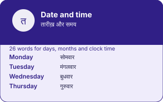

EkGuru › Learn Hindi › Tools › Date and time
Days, months and telling the time in Hindi
🔊 Tap any speaker button to hear Hindi spoken. Too fast or slow? Use the speed button at the bottom-right of the page.
The seven days, the twelve months, and the system for telling the time — including the two irregular forms that catch everybody.
Everything below is a plain table and needs no JavaScript.
The days
| English | Hindi | Sounds like |
|---|---|---|
| Monday | सोमवार | somvaar |
| Tuesday | मंगलवार | mangalvaar |
| Wednesday | बुधवार | budhvaar |
| Thursday | गुरुवार | guruvaar |
| Friday | शुक्रवार | shukravaar |
| Saturday | शनिवार | shanivaar |
| Sunday | रविवार | ravivaar |
Every one ends in वार, which means day. The first part is a planet: सोम is the moon, मंगल is Mars, बुध is Mercury, गुरु is Jupiter, शुक्र is Venus, शनि is Saturn, रवि is the sun. It is the same logic as the English and Romance names, from the same astronomical tradition.
The months
| English | Hindi | Sounds like |
|---|---|---|
| January | जनवरी | janvari |
| February | फ़रवरी | farvari |
| March | मार्च | maarch |
| April | अप्रैल | aprail |
| May | मई | mai |
| June | जून | joon |
| July | जुलाई | julaai |
| August | अगस्त | agast |
| September | सितंबर | sitambar |
| October | अक्तूबर | aktoobar |
| November | नवंबर | navambar |
| December | दिसंबर | disambar |
These are the English names in Devanagari, because India uses the Gregorian calendar for everyday life. The traditional Vikram Samvat calendar has entirely different month names and is used for festivals and religious dates — worth knowing that it exists, and worth not confusing with the list above.
Telling the time
| Time | Hindi | Sounds like |
|---|---|---|
| 1:00 | एक बजे | ek baje |
| 3:00 | तीन बजे | teen baje |
| 1:30 | डेढ़ बजे | dedh baje |
| 2:30 | ढाई बजे | dhaai baje |
| 3:30 | साढ़े तीन बजे | saadhe teen baje |
| 3:15 | सवा तीन बजे | sava teen baje |
| 2:45 | पौने तीन बजे | paune teen baje |
1:30 and 2:30 do not follow the साढ़े pattern. They are डेढ़ and ढाई, two separate words with no relation to एक or दो. Every learner gets caught by these, and there is no rule — only the two words.
Yesterday, today and the कल problem
कल means both yesterday and tomorrow, and परसों means both the day before yesterday and the day after tomorrow. The verb tense disambiguates: कल मैं गया is I went yesterday, कल मैं जाऊँगा is I will go tomorrow. English speakers find this unsettling for about a week and then stop noticing.
Devanagari is easy to get slightly wrong when it is typed by hand — a missing matra, the wrong nukta. If something here looks off to you, trust a native speaker over this page and please tell us so it gets fixed — it takes a moment and a real person reads it. Romanised spellings are a guide to the sound, not a standard: there is no single official way to write Hindi in Latin letters.
Questions
The hour plus बजे: तीन बजे is three o'clock. Half past is साढ़े before the hour — साढ़े तीन is 3:30. Quarter past is सवा, quarter to is पौने. The two irregular ones are 1:30 (डेढ़) and 2:30 (ढाई), which have their own words and simply have to be learnt.
For the Gregorian calendar, no — they are the English names written in Devanagari. There is a separate traditional calendar, Vikram Samvat, with its own month names (चैत्र, वैशाख and so on), used for festivals and religious dates. Mixing the two systems is a common mistake on learning sites.
Because Hindi marks the distinction with the tense of the verb rather than the word. कल आया is came yesterday; कल आएगा is will come tomorrow. The same is true of परसों, which is both the day before yesterday and the day after tomorrow.
Reading gets you the grammar. Speaking is the part that only happens with another human. EkGuru tutors are native Hindi speakers in India who teach one to one over video — no group classes, no subscription.
Find a Hindi Guru Free Hindi guidesNext
Date and time, in one picture
Every number and every word on this plate is taken from the tool below it, not drawn by hand: what you see here is what the tool holds.
